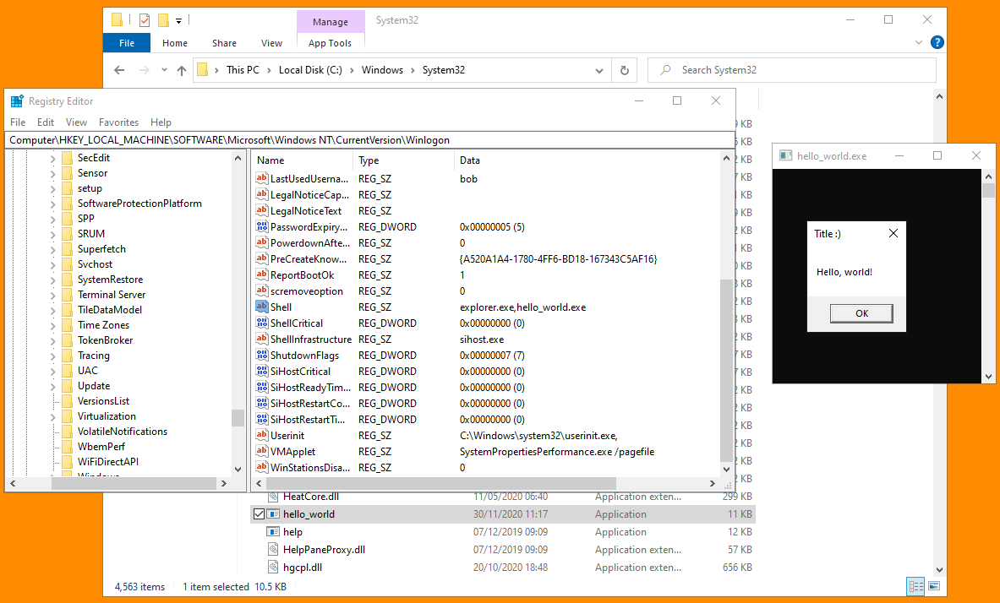

# Winlogon\Shell
•
https://pentestlab.blog/tag/userinit/HKEY_LOCAL_MACHINE\SOFTWARE\Microsoft\Windows NT\CurrentVersion\Winlogon\ShellShell runs during Windows authentication
For this method to work, you have to drop the binary to execute into
C:\Windows\system32When I tried running a binary from the desktop -
C:\Users\Bob\Desktop\hello_world.exe - explorer.exe didn't load and I got a black screen. My binary ran, but the Windows didn't draw the desktop properly.
## Code
For code, refer to
Winlogon\Userinit. It'll be very similar.